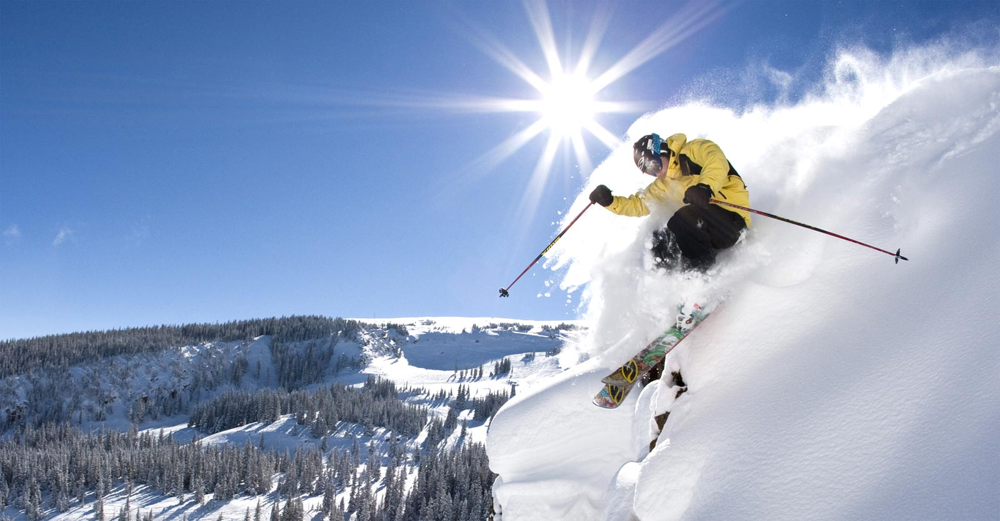
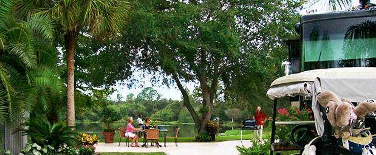

The winter season is not usually thought of as a time to roll out your motorhome and take a vacation. However, these cold, brisk months are ideal for all kinds of exciting RV travel! To find out which thrilling destination is suitable for you, fill out our simple survey below:
Located in Breckenridge, CO, this impressive RV resort boasts of nearly 200 RV accomodations and provides the best access to all kinds of winter fun. Hiking, skiing, snowboarding, snowshoeing, and more. RV camping is the ideal way to get plenty of fun and activity in while the snow lasts. Tiger Run is famous for their reasonable rates, quality facilities, and impressive local brewery. Get out there and have a blast!
Located in Titusville, Florida, this location avoids the hassle and cold that winter always brings. With numerous RV sites, full hookups, and a surplus of recreational facilities, you can enjoy a relaxing winter vacation away from the ice and snow. Splash around in a heated pool, relax in the sauna, work up a sweat in the gym, or enjoy some nearby nature trails. Do what you love, whenever you like here at The Great Outdoors.
"Located by the Columbia River bar on the southern border of Washington, Cape Disappointment is anything but disappointing. The campground itself has ample room for RVs, especially during these winter months, and the facilities are convenient and clean. The forested area is beautiful, scattered with rock pillars—some reaching several stories tall—that lead from the campgrounds to the beach. The wind-swept shore is breathtaking at any time of the year, with silver sands, crashing waves, and towering black rock cliffs to the north. - See more here."
It is important that your RV is properly equipped to endure the winter weather. If your RV experiences damage from snow, ice, or moisture, it can cost thousands of dollars in repairs!
Before you leave on your vacation, be sure to research and collect all the items you will need. You can even talk to your local RV dealer and inquire about their recommendations for safe winter travel.